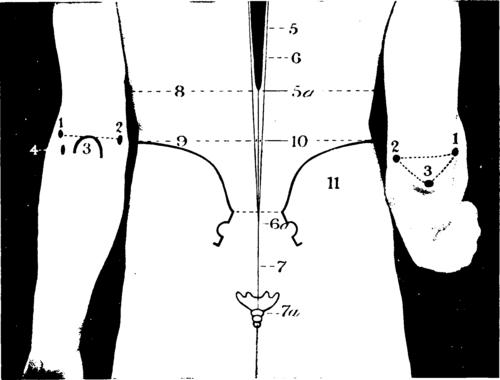

The Axilla
Description
This section is from the book "Landmarks And Surface Markings Of The Human Body", by Louis Bathe Rawling. Also available from Amazon: Landmarks and Surface Markings of the Human Body.
The Axilla
To examine this space, the elbow should be supported, and the patient instructed to relax all muscles. The anterior wall is formed by the major and minor pectoral muscles, and by the costo-coracoid membrane The pectoralis major alone forms the anterior fold of the axilla, and does not extend as far Fig. VI,8. downwards as the posterior fold, whilst its rounded appearance results from the twisting of the fibres of the pectoral muscle before their insertion into the outer bicipital ridge. The posterior wall is formed mainly by the subscapularis muscle overlying the ventral surface of the scapula, the axillary border of which bone can be made out by deep palpation from the inferior angle below to the head above. The rounded posterior fold of the axilla results from the fact that the latissimus dorsi curls round the (Fig. VI,9., Fig. XIII, 7.) teres major muscle from behind forwards in order to reach its insertion into the floor of the bicipital groove. The narrow outer boundary of the axilla corresponds to the upper part of the shaft and to the head of the humerus, and in this situation, in a well-developed arm, two prominent longitudinal folds are seen, " the anterior of which corresponds to the coraco-brachialis and biceps (short head) muscles,(Fig. VI, 11, 13.) whilst the more posterior fold results from the projection of the neuro-vascular bundle. The head of the humerus and of the scapula can be felt at the upper and posterior part of the axilla, the second rib on the inner side, and the coracoid process in front. The head of the humerus looks in the same direction as the internal condyle of the humerus. The inner wall of the axilla is formed by the upper part of the lateral wall of the thorax, which is here clothed by the serrations of the serratus magnus muscle.
The axillary lymphatic glands are arranged in three main groups, all converging towards the apex of the axilla :
(a) The pectoral set, running upwards and outwards under cover of the outer border of the pectoral muscles, and draining the anterior and lateral aspects of the chest-wall and the abdomen above the level of the umbilicus.
(b) The subscapular set, running upwards along the axillary border of the subscapularis muscle, and draining the lateral and posterior aspect of the chest above the level of the umbilicus.
(c) The brachial and axillary set, running upwards in the line of the axillary vessels, and draining the whole of the upper extremity.
Fig. VII. The Elbow And Back Region
The Elbow
1. The external condyle.
2. The internal condyle.
3. The olecranon process.
4. The head of the radius.
The Back
5. The spinal cord.
5a. The termination of the cord at the level of the transpyloric plane (1st lumbar vertebra).
6. The theca vertebralis.
6a The termination of the theca at the level of the 3rd sacral vertebra, just below 3 line drawn transversely between the two posterior superior iliac spines
7 The filum terminate.
7a. The termination of the filum near the tip of the coccyx. 8. The transpyloric plane.
9. The interiliac plane (highest point of iliac crests).
10. The site for lumbar puncture.
11. The iliac crests.
When the forearm is extended, Fig. VII, 1-3. a line joining the internal and external condyles of the humerus cuts across the tip of the olecranon process, which bony prominence lies well to the inner side of the mid-point of the intercondyloid line. When the forearm is flexed, the olecranon moves downwards, and by uniting the three bony points a triangle is formed. (Fig. XIII, 5,8) Immediately below the external condyle the head of the radius is felt "lying in the valley behind the supinator longus" (Holden). The humero-radial articulation is transverse, but the humero-ulnar articulation slopes obliquely downwards and inwards, and consequently, whilst the external condyle is about 3/4 inch above the humero-radial joint, the internal condyle lies rather more than 1 inch above the line of the humero-ulnar articulation.
The junction of the diaphysis and lower epiphysis of the humerus corresponds to a transverse line drawn across the humerus immediately above the tips of the condyles. The bony points on the outer side of the joint are generally obscured in those cases where there is considerable effusion into the elbow-joint, the synovial membrane bulging outwards below the external condyle of the humerus and between that process and the olecranon process. Under similar conditions, there is also an outward projection of the synovial membrane between the olecranon and the internal condyle of the humerus, obscuring the deep depression that normally exists in that situation— a depression at the base of which the ulnar nerve can be rolled beneath the finger.
In front of the elbow is the antecubital triangle, the base of which corresponds to a line drawn across the (Fig. VIII, 1.) front of the elbow between the two humeral condyles, whilst the inner and outer boundaries are formed respectively by the pronator radii teres and supinator longus muscles. (Fig. VIII, 2,3)
This triangular space is vertically subdivided by the biceps tendon, (Fig. VIII, 5.) on either side of which a depression exists, the inner and outer bicipital sulci. In the outer sulcus the musculo-spiral nerve divides into its terminal branches, (Fig. VIII, 4.) radial and posterior interosseous, whilst the median nerve and the brachial artery lie in the inner sulcus, the artery intermediate between the tendon and the nerve. (Fig. VIII, 7,8) The artery and nerve are, however, obscured in the lower part of the inner sulcus by the overlying bicipital fascia, (Fig. VIII, 6.) which can be traced inwards to the pronator region, whilst its upper free margin presents a well - marked crescentic edge which looks upwards and inwards.
The superficial veins in front of the bend of the elbow are arranged in the form of a letter M, Fig. IX. the radial, median and ulnar veins being received from below, whilst two main efferent vessels, the cephalic and the basilic, carry the blood upwards, The basilic vejn passes upwards in the superficial fascia, (Fig. IX, 9.) along the inner side of the arm, and pierces the deep fascia about half-way between the axilla and the internal condyle, (Fig. IX, 10.) and at the foramen so produced in the deep fascia the internal cutaneous nerve emerges to become superficial. The epitrochlear gland lies in close connection with the median basilic or basilic veins above and in front of the internal condyle. (Fig. IX, 11.)
Fig. VIII. The Elbow Region
1. The interconclyloid line.
2. The supinator longus.
3. The pronator radii teres.
4. The musculo-spiral nerve.
5. The biceps.
6. The bicipital fascia.
7. The brachial artery.
Fig. IX. The Median Nerve - The Veins Of The Arm And Forearm
1. The radial vein.
2. The median and niedian-profunda veins.
3. The median-cephalic vein.
4. The cephalic vein.
5- The point at which the cephalic vein pierces the costo-coracoid membrane.
6. 1 he median-basilic vein.
7. The anterior ulnar vein. 8. The posterior ulnar vein.
9. The basilic vein.
10. The point at which the basilic vein pierces the deep fascia.
11. The epitrochlear gland.
The cephalic vein can be traced upwards along the outer side of the arm as far as the groove between the deltoid and pectoralis major muscles. (Fig. IX, 4.)
In the interval between these two muscles the vein lies embedded, and eventually pierces the costo-coracoid membrane in the infraclavicular region to open into the axillary vein. (Fig. IX, 5.)
Continue to: